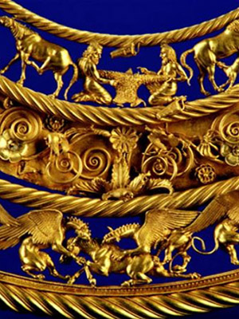

Gold Scythian pectoral, or neckpiece, from a royal kurgan in Tolstaya Mogila, Ordzhonikidze,
Ukraine, dated to the second half of the 4th century BC
The Scythians were a nomadic people of
Iranian descent who migrated from central Asia into southern Russia and eastern Europe. They founded
a powerful empire in the region of what is now Crimea, and were well known for their skills in battle
and their horsemanship.
The steppes art typical of the Scythians was intricate and decorative,
and composed of gold, wood, silver, bronze, iron, leather and bone. Motifs were often very detailed
animal and human figures. Pieces were kept light and portable to suit their largely nomadic
lifestyles. Elaborate hoards of goods have been found at burial mounds and ceremonial sites
across Central Asia, southern Russia and Europe. (1)